Heel Pain or Plantar Fasciitis? 10 Reasons People Are Switching to This Sneaker (and Not Going Back)
By the [vrsn] teamUpdated Oct 5, 20264 min read
The first steps out of bed. For a lot of people with plantar fasciitis, it is the worst moment of the day.
Heel pain can take over your whole day. About 1 in 10 adults get plantar fasciitis at some point in their life, and it is the most common cause of heel pain in adults. (AAFP)
Mayo Clinic says the pain is often worst with your first few steps in the morning. It can also come back after long periods of standing, or when you get up from sitting. (Mayo Clinic)
That is why more and more people are rethinking the one thing they stand in all day: their shoes. They are trading worn-out sneakers, flat slip-ons and stiff orthopedic shoes for a relief sneaker with the features Mayo Clinic suggests looking for. It is also made for people dealing with heel spurs, Achilles pain, bunions and feet that ache after a long day.
Does any of this sound like you?
Tap the ones that fit.
- Your first steps out of bed hurt the most
- Your heel aches after you have been standing a while
- Getting up from a chair or the car brings the pain back
- You have tried inserts, stretches or "comfort" shoes, and it keeps coming back
If you nodded at even one, here are the 10 reasons people like you are making the switch. You do not need a diagnosis for this to apply to you.
1. Arch Support Where It Hurts
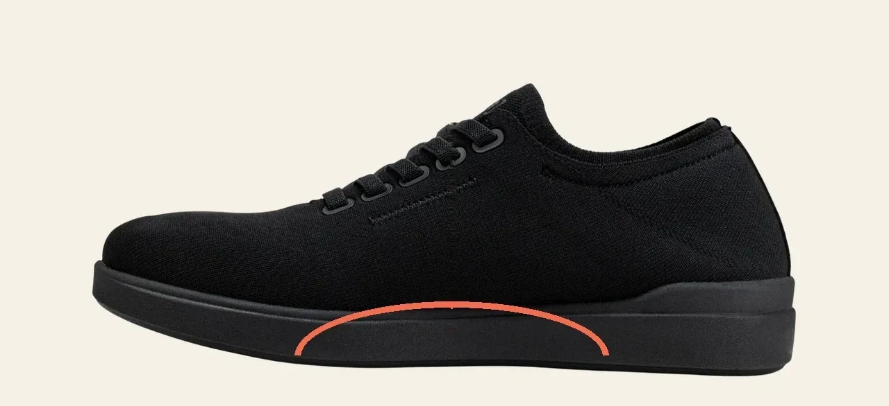
Your plantar fascia is the band of tissue under your foot that runs from your heel to your toes. Mayo Clinic says it supports the arch of your foot and absorbs shock when you walk.
[vrsn] has a contoured arch built into the footbed. It carries your plantar fascia from the moment you put them on.
Already paid for custom orthotics? The insole lifts out, so yours fit right in.
"I'm 67 and have been dealing with plantar fasciitis and arthritis in my knees for the past 5 years. The cushioning at the heel is exactly where I need it. I've gone from barely being able to do my morning walks to comfortably doing 8,000 steps a day. My wife noticed I'm not limping anymore."
David C. ★★★★★
2. A Steady Grip on Tile, Wood and Concrete
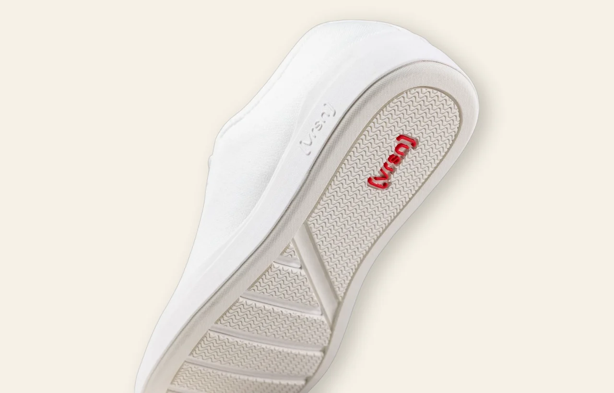
Kitchen tile. Hardwood. Store aisles, hospital hallways, the garage floor. Most of us spend the day on hard, smooth floors.
[vrsn] has a slip-resistant base with a stable grip on any surface, from kitchen tile to wood floors to concrete.
3. A Wide Toe Box for Bunions and Tired Feet
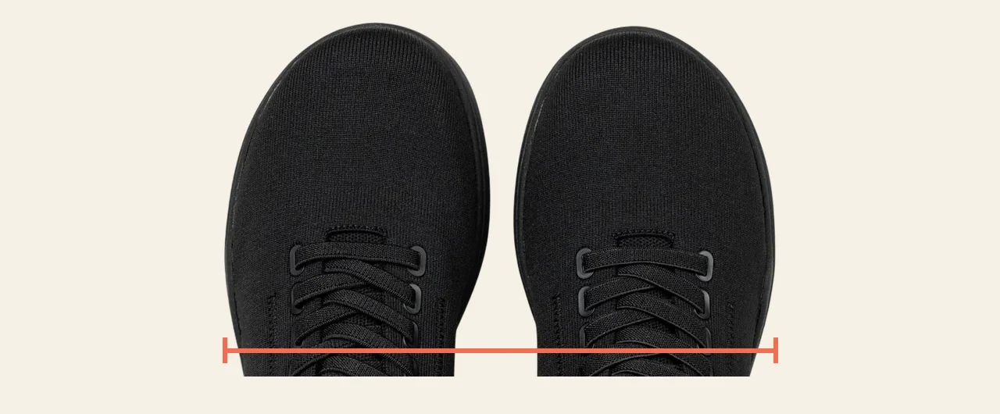
Most sneakers get narrow at the front. Your toes get squeezed together all day.
[vrsn] comes with a wide toe box as standard. Your toes can spread out and sit flat. That means room for a bunion, and room for feet that are a little bigger by the end of the day.
4. All-Day Comfort, Zero Break-In
break-in
There is no break-in period. Slip them on and the cushioning works from the very first step, through hour twelve.
That matters with heel pain. Mayo Clinic notes plantar fasciitis is more common in people who spend long hours walking or standing on hard surfaces. So the pair that gets you through a long shift is the same pair you can still wear on the walk after dinner.
"Working long hospital shifts while dealing with plantar fasciitis and a bone spur isn't easy. These shoes let me focus on my patients instead of my feet. This is already my third pair because I haven't found anything else that compares."
Mary R. ★★★★★
5. Built With What Mayo Clinic Says to Look For in a Shoe
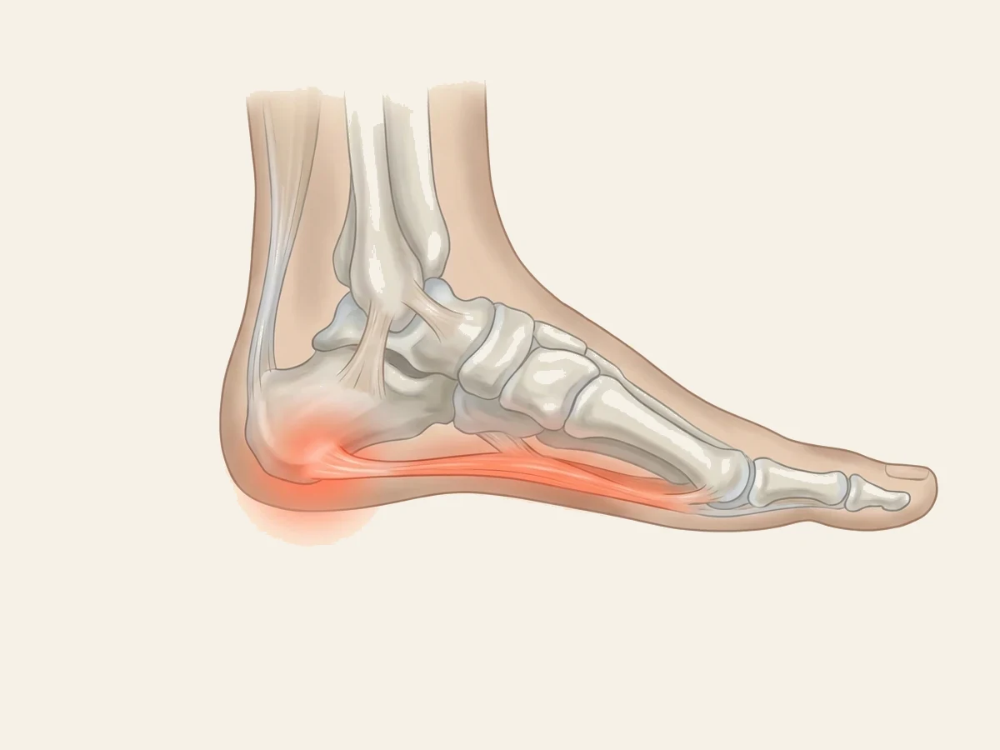
Here is what Mayo Clinic tells people with plantar fasciitis about their shoes:
"Wear supportive shoes. Choose shoes with good arch support, thick soles and plenty of cushioning. Avoid wearing flat shoes and walking barefoot."
Here is how [vrsn] lines up with that advice:
Mayo Clinic also says to replace worn-out shoes, because old shoes lose their support and cushioning. If your everyday pair has been with you for years, that alone may be part of the problem.
6. Easy to Clean: They Go in the Washing Machine
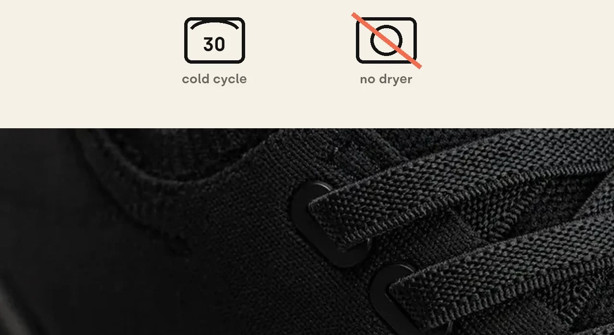
Spills, mud, a long summer day. Life happens.
[vrsn] is machine washable. Wash them on a gentle cycle in cold water and let them air dry. They come out ready to wear again.
7. Light, Flexible, and Nothing Like an "Orthopedic" Shoe
![[vrsn] sneakers in white, black and beige, the beige pair worn with rolled jeans.](assets/pf/img/group.webp)
Supportive shoes used to mean heavy, clunky shoes. Not these.
[vrsn] is lightweight, with a breathable knit upper and a flexible sole that moves with your foot. And it looks like a regular, good-looking sneaker that goes with jeans, scrubs or slacks.
"Bought the navy pair a couple months ago and they're easily my favorite shoes for teaching. Even with plantar fasciitis I can make it through the whole day without hurting. Plus they're SO cute!"
Christopher G. ★★★★★
8. Podiatrist Approved
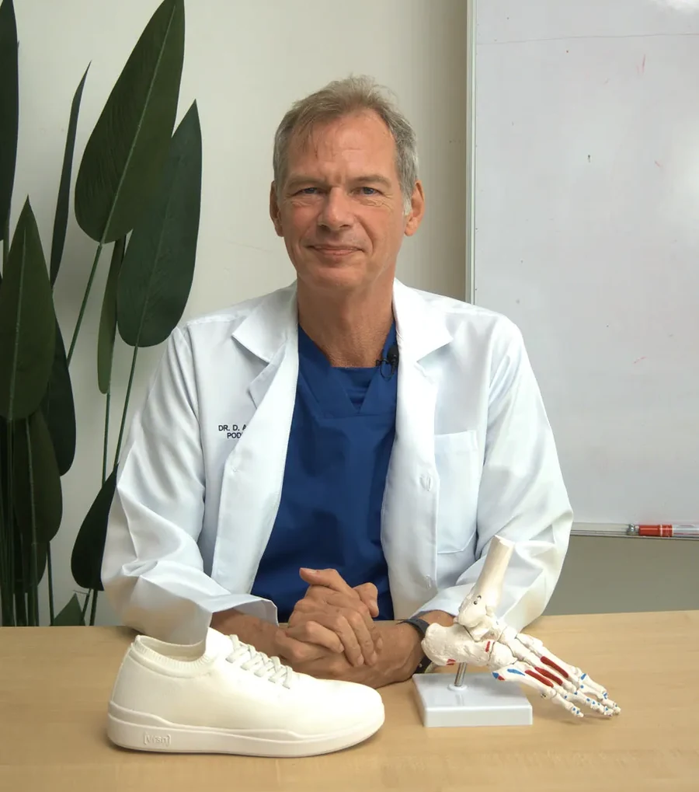
[vrsn] is podiatrist approved. Dr. D. Ashford, a Doctor of Podiatric Medicine, put it this way:
"[vrsn]'s design gives my patients immediate relief while letting their feet rebuild strength naturally. It's the first shoe I've found that does both."
Dr. D. Ashford, DPMDoctor of Podiatric Medicine
And for many customers, [vrsn] came after years of trying everything else. Elizabeth is one of them:
"Two years of debilitating plantar fasciitis had reduced me from an active hiker to someone who struggled to get through a grocery store. I'd tried physical therapy, injections, orthotics, and just about everything else. I honestly didn't expect a shoe to make much difference. Within days I noticed less pain, and after a few weeks I was walking three miles again. The pain isn't completely gone, but the improvement has been incredible."
Elizabeth M. ★★★★★
9. 100 Days to Decide at Home
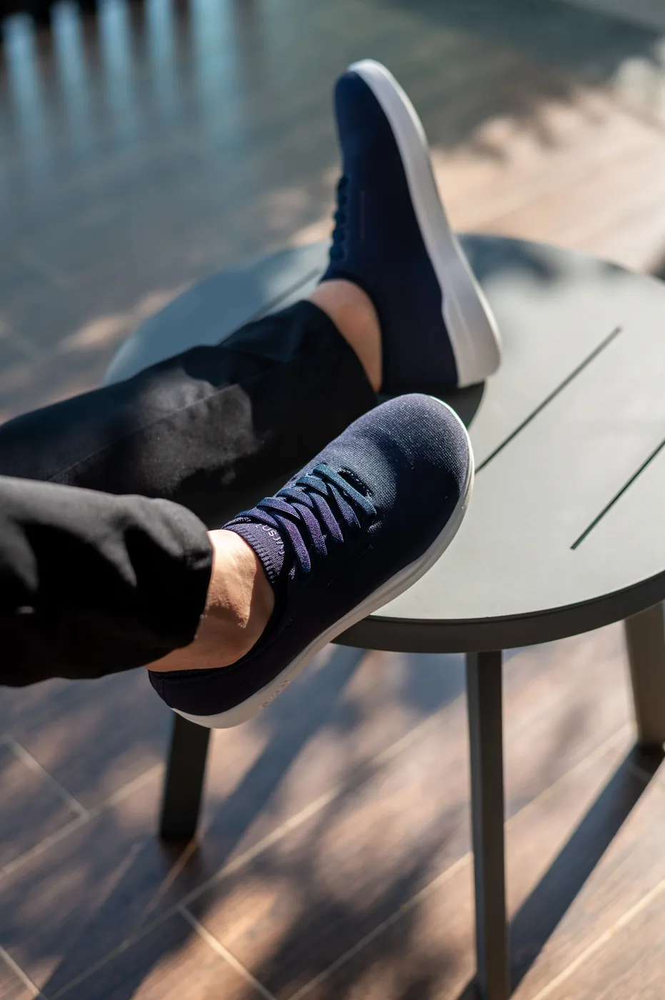
at-home
trial
Heel pain does not change over a weekend. So a short return window is not much of a test.
Every [vrsn] order comes with a 100-Day At-Home Trial. Not the right fit? Return them hassle-free. Returns are free, exchanges are free, and you get a full refund.
Sizing tip: most people find they run true to size. If you are between sizes, size up. They do not come in half sizes.
10. 50,000+ Customers Have Already Made the Switch
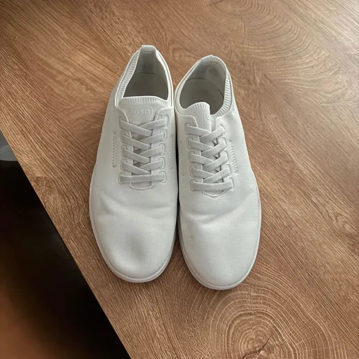
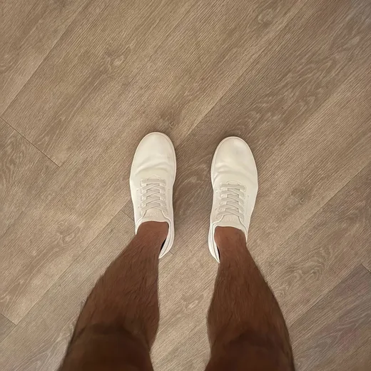
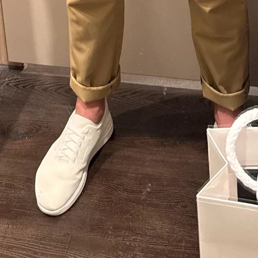
Photos from customer reviews
More than 50,000 customers. 96% of reviewers gave them five stars.
"Two years of plantar fasciitis had taken away something I loved: walking. I tried orthotics and several different shoes with little success. These are now my second pair, and they have made a world of difference. I can walk around the neighborhood and keep up with my kids again."
Sandra M. ★★★★★"Plantar fasciitis had me worried about my Italy trip. These shoes were perfect. Walked over 13,000 steps the first day with no break-in."
Emily H. ★★★★★"I've got overpronation and plantar fasciitis, so these came highly recommended. They do run a little small, but after exchanging for the next size up, they fit like a glove. They're springy, supportive, and the arch support is firm without being painful. My heel still burns a little, but I know that's not going to disappear overnight."
Sophia T. ★★★★★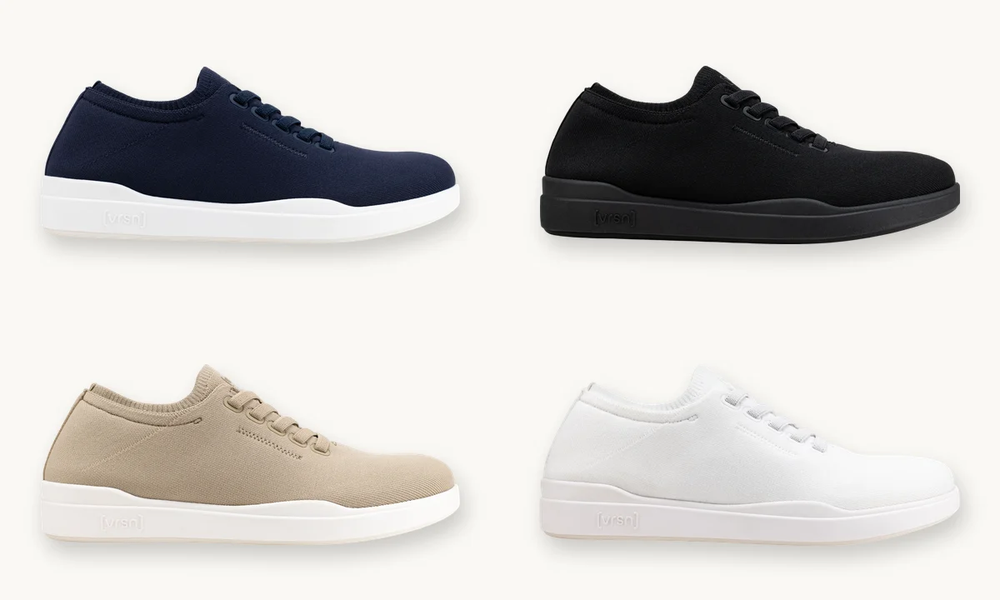
Navy, black, beige and white
Your discount is applied on the next page. Pick your color and size there.
Apply Discount & Choose My Size● Offer expiring soon
4.9 out of 5, trusted by 50,000+ people
- Trojian T, Tucker AK. Plantar Fasciitis. American Family Physician, 2019. Lifetime incidence about 10%; most common cause of heel pain in adults.
- Mayo Clinic. Plantar fasciitis: Symptoms and causes
- Mayo Clinic. Plantar fasciitis: Diagnosis and treatment